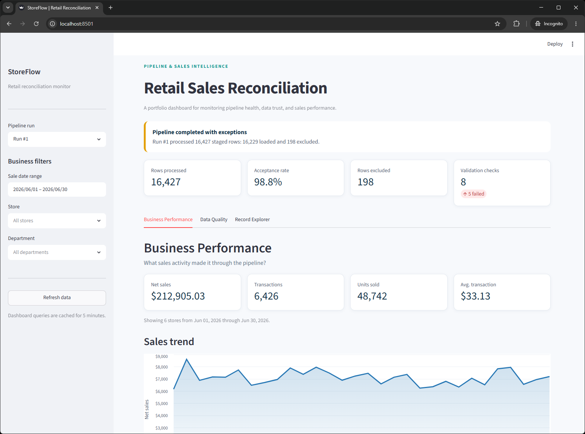

SpartanNash · Remote
Retail Systems Analyst
Support and maintain enterprise retail systems following SpartanNash’s acquisition of Fresh Encounter, continuing work with the systems and data operations used by the acquired organization.
St. Petersburg, Florida
Data engineer, systems analyst, and full-stack developer focused on dependable integrations, clean data, and tools that make operations easier, with deep experience in retail technology.
A visual overview connecting operational systems, data operations, and business outcomes.
01 / Profile
I turn complicated operational systems into reliable, understandable workflows.
My background spans retail technology, data engineering, technical support, and software development. Since 2019, I’ve worked in roles that connect day-to-day operations with the systems people rely on, including three years leading retail systems support and data operations for a multi-store grocery chain.
My work includes supporting integrations, investigating data issues, documenting operational processes, and automating recurring file tasks. Retail is where I’ve built much of that experience, but the same approach applies wherever connected systems and dependable data matter.
02 / Experience
SpartanNash · Remote
Support and maintain enterprise retail systems following SpartanNash’s acquisition of Fresh Encounter, continuing work with the systems and data operations used by the acquired organization.
Fresh Encounter · Tampa / St. Petersburg
Joined Fresh Encounter to provide lead technical support for its 49 Florida Save A Lot stores. Supported store technology through openings, ongoing operations, closures, and the transition to a new owner, then moved into data engineering as the store portfolio transitioned.
Tampa Eye Clinic · Tampa
Assisted patients, trained new hires for optometric technician roles, and provided Tier 1–2 technical support for clinical and administrative staff.
Visionworks
Began as an optometric technician supporting patient care and progressed into the office manager role by the end of my time with the practice.
03 / Selected Work
An end-to-end Python, PostgreSQL, and Streamlit pipeline that processes multi-store sales files while preserving the evidence needed to explain what loaded, what failed, and whether the final data can be trusted.
Sample 30-day, six-store pipeline run using generated data.

A connected set of documentation and automation tools built for Fresh Encounter’s retail data environment.
Documented company-wide data flows, scheduled tasks, system dependencies, and third-party integrations in a central operational reference.
Built scripts to normalize CSV files and translate store identifiers before downstream processing.
Automated invoice archiving and recurring file operations that had previously required repeated manual handling.
04 / Capabilities
Education
Western Governors University
St. Petersburg College
Certifications
Amazon Web Services
CompTIA
PeopleCert
05 / Contact
I’m interested in data engineering, systems analysis, automation, and full-stack development opportunities across industries.